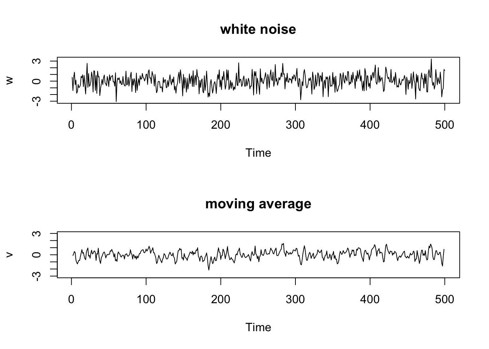

Covariances — and their time-series counterpart, autocovariances — are central to everything that follows. In this section we recap the key concepts summarising the second-order structure of the probabilistic behaviour of random variables.
Definitions
Consider univariate random variables \(Y_1\) and \(Y_2\). The \(r\)-th raw moment of \(Y_1\) is \(\mathsf{E}(Y_1^r)\) and the \(r\)-th central moment is \(\mathsf{E}\!\left[(Y_1 - \mathsf{E}(Y_1))^r\right]\), for \(r \in \mathbb{N}\).
Population variance\[\text{Var}(Y_1) := \mathsf{E}\!\left[(Y_1 - \mathsf{E}(Y_1))^2\right] = \mathsf{E}(Y_1^2) - (\mathsf{E}(Y_1))^2\]
The variance is the second central moment of \(Y_1\) — a measure of dispersion.
The off-diagonal terms where \(t \neq s\) give the cross-covariance structure — precisely why the double sum is the natural notation. This extends to \(T\) variables:
In matrix notation this is \(\mathbf{a}^\top \boldsymbol{\Sigma}\, \mathbf{a}\), where \(\boldsymbol{\Sigma}\) is the covariance matrix — a form you will encounter constantly in this module.
NoteWorth memorising
Memorise the structure of this result, not the derivation steps. The steps are mechanical; the double sum structure is what matters.
A result we will see repeatedly — in OLS, GLS, portfolio theory, and throughout time series analysis.
2 A stark message
What is the sample mean?
Recall the humble yet ubiquitous sample mean \(\bar{Y}_N\):
\[\bar{Y}_N = \frac{1}{N}\sum_{i=1}^{N} Y_i\]
The subscript \(N\) appears explicitly to emphasise the dependence of the sample mean on sample size.
Why do we turn so often to this statistic? The answer is Chebyshev’s LLN: \(\bar{Y}_N\) converges in probability to \(\mathsf{E}(Y)\) as \(N \to \infty\). Under suitable conditions, a sample moment is a consistent estimator of its population counterpart.
The sample mean appears embedded throughout econometric estimation. For OLS in \(Y_t = \alpha + \beta X_t + \varepsilon_t\):
We write \(\hat{\theta}_T \overset{p}{\to} \theta\) and say \(\hat{\theta}_T\) is consistent for \(\theta\). Convergence in mean-square implies convergence in probability via Chebyshev’s inequality:
The denominator is \(O(T^2)\) and the numerator is \(O(T)\) — so \(\text{Var}(\bar{Y}_T) = O(1/T)\). But if we allow for an arbitrarily high degree of temporal correlation, the cross terms no longer vanish. The numerator is no longer \(O(T)\), and our crucial consistency result risks falling to pieces.
NoteBig-O notation
The sequence \(\{b_T\}\) is said to be at most of order\(T^\alpha\), written \(b_T = O(T^\alpha)\), if there exists a finite constant \(C > 0\) and integer \(T^*\) such that for all \(T \geq T^*\), \(|T^{-\alpha}b_T| \leq C\).
The stark messageThe sample mean — the most widely used statistic in all of econometrics — can fail to converge when observations are temporally dependent. This is why time series analysis requires its own toolkit.
Dependence is not merely an inconvenience — it strikes at the heart of statistical inference. We will return to this when we study the ergodic theorem.
3 Review questions
Explain formally what is a random variable, a stochastic process, a time series, and what is meant by the analysis of time series.
Explain what is a population moment; what is the population variance of a random variable; and what are the covariance and correlation between two random variables.
State Chebyshev’s LLN for an iid process. Prove it. Give an intuitive explanation of how and why it works. Explain its empirical relevance.
Explain with explicit reference to \(\text{Var}(\bar{Y}_T)\) why the LLN can potentially fail for time series data.
NoteNote on solutions
Separate solutions will not be provided — answers can be found in these notes. Use these questions to consolidate knowledge and as discussion prompts when studying with others.
4 Further reading
Statistical fundamentals — Appendix B and C of Wooldridge, Introductory Econometrics, or any solid undergraduate statistics textbook.
Main textbook — Shumway and Stoffer, Time Series Analysis and Its Applications with R Examples (SS). For Topic 1, see SS Chapters 1.1–1.2.
The material in the stark message section is not directly from SS — it represents a specific arrangement of ideas for this course.
Goals
To look at some simple time series plots.
To introduce WN, MA and AR models.
To define ARMA(p, q) models.
To understand the lag operator and polynomials in the lag operator.
5 Examples of time series plots
One primary objective of time series analysis is to develop statistical models that provide plausible descriptions for data that are temporally ordered. It is conventional, when displaying such data graphically, to plot values on the vertical axis with the time scale on the horizontal axis, and to connect adjacent values to reconstruct visually the hypothetical continuous series.1
To formally characterise data that fluctuate randomly over time, statisticians model any real-life sample as a realisation of a stochastic process \(\{Y_t\}\) indexed according to the order observations are received in time. In all our lectures, \(t\) will be discrete and vary over the integers \(t = 0, \pm1, \pm2, \ldots\), or some subset such as \(t = 1, \ldots, T\). Observations are assumed equally spaced.
Yearly average global temperature deviations (1880–2015) in degrees centigrade. (Source: SS Fig. 1.2)
Speech recording of the syllable \(aaa \cdots hhh\) sampled at 10,000 points per second with \(n = 1020\) points. (Source: SS Fig. 1.3)
Arrival phases from an earthquake (top) and explosion (bottom) at 40 points per second. (Source: SS Fig. 1.7)
fMRI data from various locations in the cortex, thalamus, and cerebellum; \(n = 128\) points, one observation every 2 seconds. (Source: SS Fig. 1.6)
Non-examinable joke!
6 Building blocks of the ARMA framework
What is a white noise process?
Definition. Consider a stochastic process \(\{Y_t\}\) where \(\mathsf{E}(Y_t) = \mu_Y\) and
for \(t, s \in \mathbb{Z}\). We say that \(\{Y_t\}\) is a white noise process with mean \(\mu_Y\) and variance \(\sigma^2_Y\), written \(Y_t \sim \mathsf{WN}(\mu_Y, \sigma^2_Y)\). The mean \(\mu_Y\) is most often assumed zero.
A white noise process is a collection of time-ordered yet uncorrelated random variables. An example is \(Y_t \overset{\scriptscriptstyle\text{iid}}{\sim} \mathcal{N}(\mu_Y, \sigma^2_Y)\), but note that neither normality nor the iid assumption is needed for a process to be classified as noise.
How is noise even relevant? Are we not studying dependent processes?
One of the key features of the ARMA framework is that even processes with highly sophisticated dependence structures can be built just by linearly combining — or in time series parlance, filtering through — uncorrelated random variables. The simple white noise process thus serves as the springboard for the rest of the theory, and this is truly remarkable.
Terms and phrases commonly used in place of “dynamics” that you may encounter include: inter-temporal dependence, persistence, smoothness, and inertia.
What is a linear filter?
A linear (time-invariant) filter or smoother converts one time series \(\{\varepsilon_t\}\) into another \(\{Y_t\}\) by the linear operation
where \(\{a_h\}\) for \(h = -q, \ldots, s\) is a set of weights for \(q, s \in \mathbb{N}\). The filter is symmetric when \(s = q\) and \(a_h = a_{-h}\).
The simplest symmetric filter uses equal weights \(a_h = 1/(2q+1)\) for \(h \in \{-q, \ldots, 0, \ldots, q\}\), zero otherwise. For example, \(Y_t = (\varepsilon_{t-1} + \varepsilon_t + \varepsilon_{t+1})/3\) gives:
A completely new series \(\{Y_2, Y_3, Y_4\}\) has been created from the original \(\{\varepsilon_1, \varepsilon_2, \varepsilon_3, \varepsilon_4, \varepsilon_5\}\).
The graphs below illustrate the distinction between white noise and the three-point moving average process above.
w <-rnorm(500, 0, 1) # 500 iid N(0,1) realisationsv <-filter(w, sides =2, filter =rep(1/3, 3)) # three-point moving averagepar(mfrow =c(2, 1))plot.ts(w, main ="white noise")plot.ts(v, ylim =c(-3, 3), main ="moving average")

Figure 1: Gaussian white noise series (top) and three-point moving average of the Gaussian white noise series (bottom).
Now consider a different example: the one-sided moving average \(Y_t = \varepsilon_t + 0.5\varepsilon_{t-1}\):
Definition. A process \(\{Y_t\}\) is called a moving average process of order \(q\), written \(Y_t \sim \mathsf{MA}(q)\), if there exists a white noise process \(\varepsilon_t \sim \mathsf{WN}(0, \sigma^2_\varepsilon)\) and finite constants \(\theta_j\) for \(j = 1, \ldots, q\) with \(\theta_q \neq 0\), such that
The \(\mathsf{MA}(1)\) example \(Y_t = \varepsilon_t + 0.5\varepsilon_{t-1}\) exhibits serial correlation even though \(\varepsilon_t \sim \mathsf{WN}(0, \sigma^2_\varepsilon)\):
A completely new process has been created with very different dependence characteristics from \(\{\varepsilon_t\}\) — just by linearly combining its elements.
Another way of introducing dynamics is by postulating a linear relationship between \(Y_t\) and its own past values \(Y_{t-h}\) for \(h > 0\). These relationships are called autoregressions.
What is an AR(p) process?
Definition. A process \(\{Y_t\}\) is called an autoregressive process of order \(p\), written \(Y_t \sim \mathsf{AR}(p)\), if there exists a white noise process \(\varepsilon_t \sim \mathsf{WN}(0, \sigma^2_\varepsilon)\) and finite constants \(\phi_j\) for \(j = 1, \ldots, p\) with \(\phi_p \neq 0\), such that
where the introduction of dynamics relative to the white noise case can be illustrated by checking the autocovariances, which we will do in detail soon.
Are we really just linearly combining noise again…?
Yes — an AR(1) process can be expressed as a convergent linear combination of noise. By successive substitution:
This is called the MA(\(\infty\)) representation of \(\{Y_t\}\).
What more intuition can we glean from the algebra?
Pay close attention to the MA(\(\infty\)) representation of the AR(1) model, \(Y_t = \sum_{k=0}^{\infty}\phi^k\varepsilon_{t-k}\) where \(0 < \phi < 1\):
The current value \(Y_t\) is an accumulation of an infinite stream of current and past noise elements \(\varepsilon_t, \varepsilon_{t-1}, \varepsilon_{t-2}, \ldots\), where the effects \(1, \phi, \phi^2, \ldots\) of the distant past (high \(k\)) are lower than those of the recent past (low \(k\)).
In the AR(1) model the present depends on the infinite past — very different from the MA(1) model. The effect of the past on the present is heavily dampened the further back in time we go: the coefficients decay at a geometrically declining rate.
Geometric decay is the discrete equivalent of exponential decay, conventionally considered the benchmark for fast decay.
7 The ARMA framework
What is an ARMA(p, q) process?
Definition. A process \(\{Y_t\}\) is called an ARMA process of orders \(p\) and \(q\), written \(Y_t \sim \mathsf{ARMA}(p, q)\), if there exists a white noise process \(\varepsilon_t \sim \mathsf{WN}(0, \sigma^2_\varepsilon)\), finite constants \(\phi_j\) for \(j = 1, \ldots, p\) with \(\phi_p \neq 0\), and finite constants \(\theta_k\) for \(k = 1, \ldots, q\) with \(\theta_q \neq 0\), such that
The order \(p\) is the highest power of \(L\) appearing in \(\Phi(L)\) with a non-zero coefficient; the order \(q\) is defined analogously for \(\Theta(L)\).
How can we express the ARMA(p, q) model using \(L\) notation?
The ARMA(\(p\), \(q\)) process can be written compactly as
\[\Phi(L)Y_t = \Theta(L)\varepsilon_t\]
where \(\varepsilon_t \sim \mathsf{WN}(0, \sigma^2_\varepsilon)\) and \(\Phi(\cdot)\), \(\Theta(\cdot)\) are as defined above.
As an example, the AR(1) process \(Y_t = \phi Y_{t-1} + \varepsilon_t\) corresponds to \(\Phi(L) = 1 - \phi L\) and \(\Theta(L) = 1\).
NoteRemark
We often work with lag polynomials as standard mathematical functions. For instance, to find the root of the AR polynomial we solve \(\Phi(z) = 1 - \phi z = 0\) for \(z \in \mathbb{C}\). Note that when doing this we switch the argument to an arbitrary \(z \in \mathbb{C}\) — it would be incorrect to write \(\Phi(L) = 0 \iff L = 1/\phi\) because \(L\) is an operator, not a complex number.
8 Review questions
What are the formal definitions of AR, MA and ARMA models? Ensure to frame each answer in terms of the \(L\) operator. Further, give the definition of the order of a polynomial.2
Consider the process \((1 - 0.5L)Y_t = \varepsilon_t\) where \(\varepsilon_t\) is white noise. Mr Tick Whittington insists that \(\{Y_t\}\) is \(\mathsf{AR}(1)\), but his brother Tock insists that \(\{Y_t\}\) is \(\mathsf{MA}(\infty)\). Who is correct?
NoteNote on solutions
Separate solutions will not be provided — answers can be found in these notes. Use these questions to consolidate knowledge and as discussion prompts when studying with others.
9 Further reading
Main textbook — Shumway and Stoffer, Time Series Analysis and Its Applications with R Examples (SS). For Topic 2, see SS Chapters 1.1–1.2 (there is overlap with Topic 1 in the reading).
Footnotes
Although we plot data in this fashion, note that (i) we will not study continuous time series models in this course (though they comprise an entire field in financial modelling, e.g. option pricing and high-frequency trading); and (ii) we will not get into issues surrounding the selection of the sampling rate when discretising a continuous time series, even though these issues can be extremely important.↩︎
Yes, I do expect my students to memorise all definitions. It is important to do so for your learning in this field.↩︎